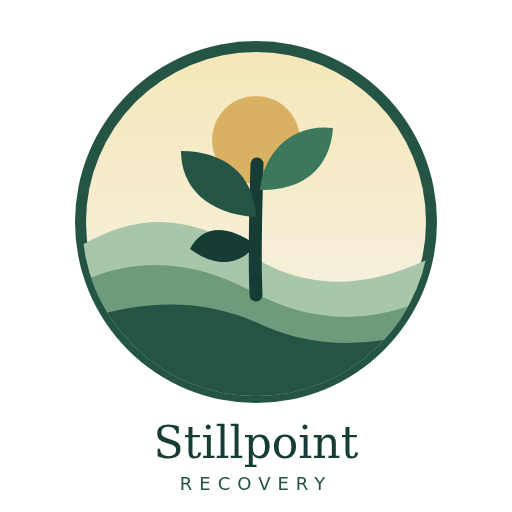
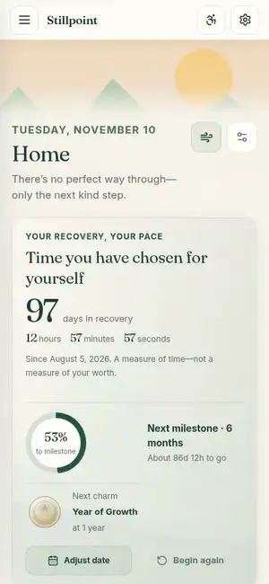
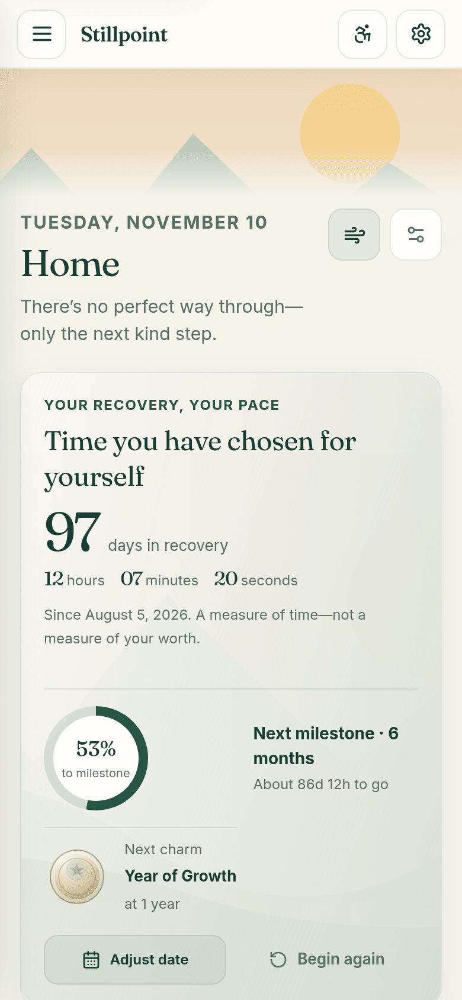
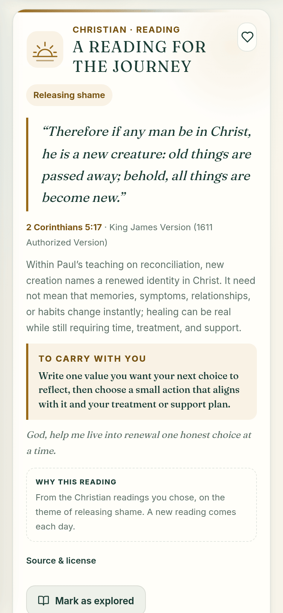
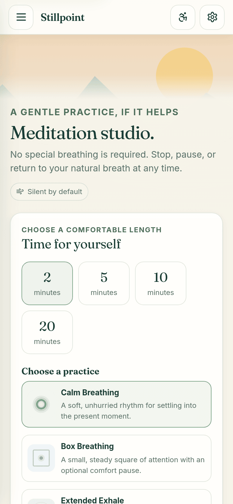
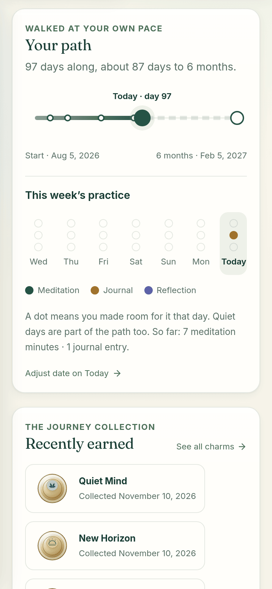
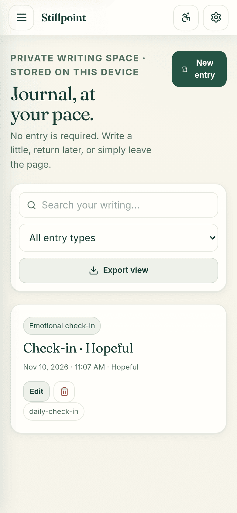
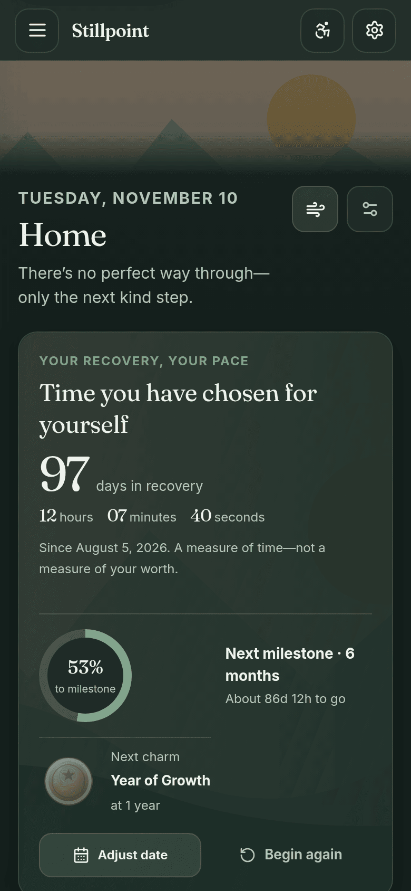

01
Any phone

A quiet daily companion for recovery. Private by design, faith-friendly by choice.
Art: the app's own sunrise hills
No account, and your journal and dates stay on your phone.

The same tour plays in the app on the welcome screen and under Settings → Take the tour. It's served by Stillpoint itself, not a video site.
Why Stillpoint
Journals, dates, readings, meditation sessions and charms live in your browser. No account, no cloud sync, no ads, no analytics.
Seven traditions: Christian, Buddhist, Hindu, Muslim, Jain, Red Road (Native wellbriety) and Spiritual but not religious. Nothing is preselected.
Missing a day never breaks anything. Progress is a gentle path to your next milestone.
Twelve illustrated charms, from First Light to Year of Growth.
One tap opens a 90-second pause to breathe, ground yourself, write a few words, or see trusted people you saved. A pause, not an emergency service.
Ten gentle practices in 2, 5, 10 or 20 minute sessions, silent by default, with three bundled soundscapes.
Installs like an app (PWA) and keeps working without a connection.
Reduced motion, high contrast, text size 85%–130%, discreet mode, full keyboard and screen-reader support, with automated axe, contrast and Lighthouse checks.






A quiet place for each day: your count, a reading, a pause when you need one.
Nothing to ask of a person: no account, no email.
A between-session tool that collects no client data.
A link to the daily NA reading, and Central Valley AA/NA/FA meeting samples.
Readings from many traditions, or none.
Free, open source, nothing to procure.
01
Any phone
02
iPhone or iPad
Tap Share, then Add to Home Screen.
03
Android
Tap the ⋮ menu, then Install app.
04
After installing
The installed app works offline and has shortcuts to these three. Data stays on that device; use Settings → backup to keep a copy.
Our privacy promise
| What | When | What is sent |
|---|---|---|
| Loading the app | Opening or updating | Ordinary requests for app files, no recovery data Host: Vercel |
| Community notes Off by default | Only after you turn them on and open the board | A note of 120 characters or fewer, plus the day's reading key Notes are public and kept up to 90 days |
| Meeting map | Only when you open it | Map tile requests to OpenStreetMap |
| “Show my approximate position” | Only when you press it | Nothing: your position stays in memory on that page and is never sent to Stillpoint |
| Outside links | Only when you click | A normal visit to that site |
Browser storage and backups are not encrypted, and clearing site data can erase what you saved.
Stillpoint is free and MIT-licensed, with no participant data to manage. Programs can pilot it today and open an issue to share what participants need.
Designers, writers, developers, accessibility testers and people with lived experience are welcome to contribute on GitHub.